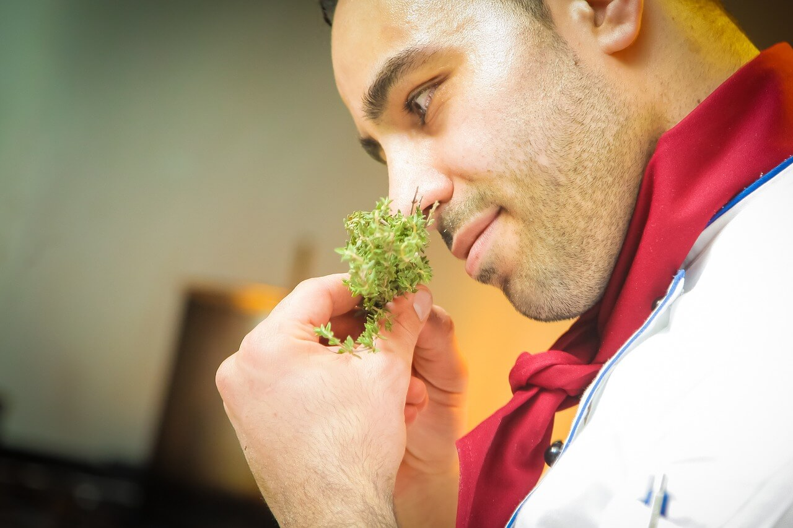
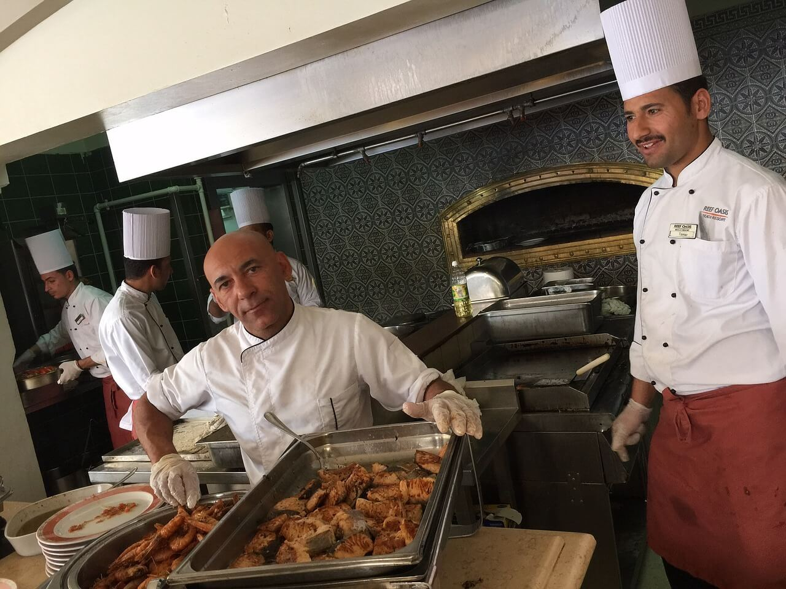
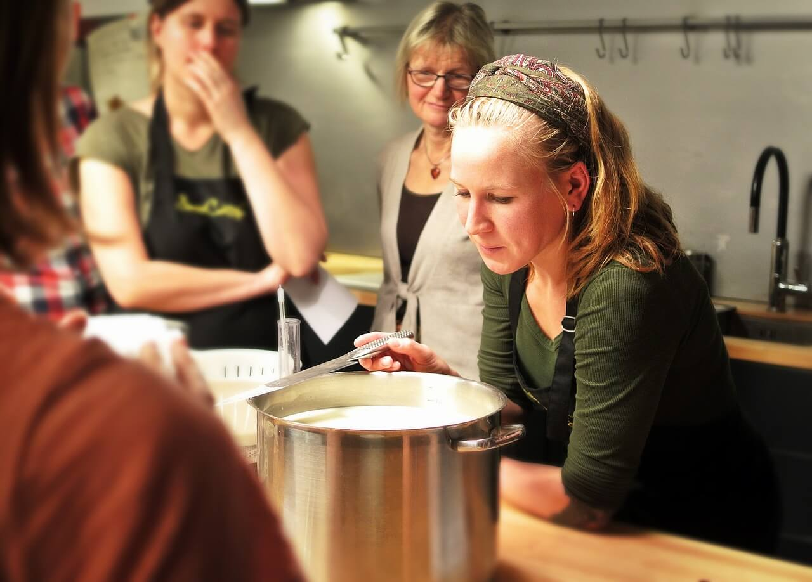
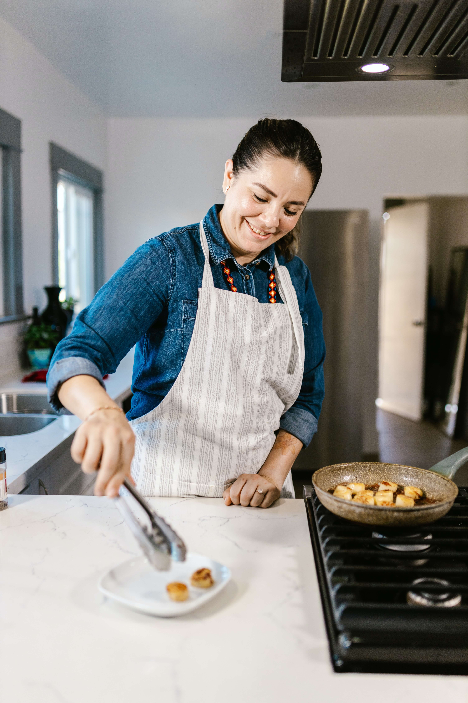
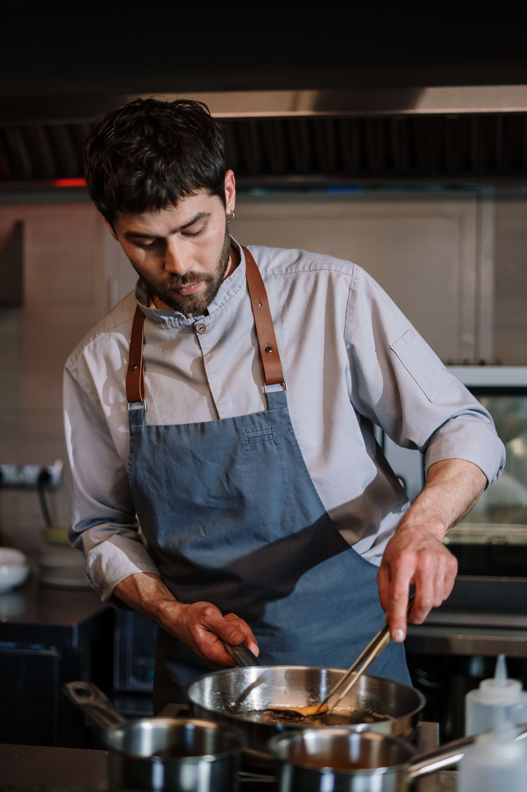
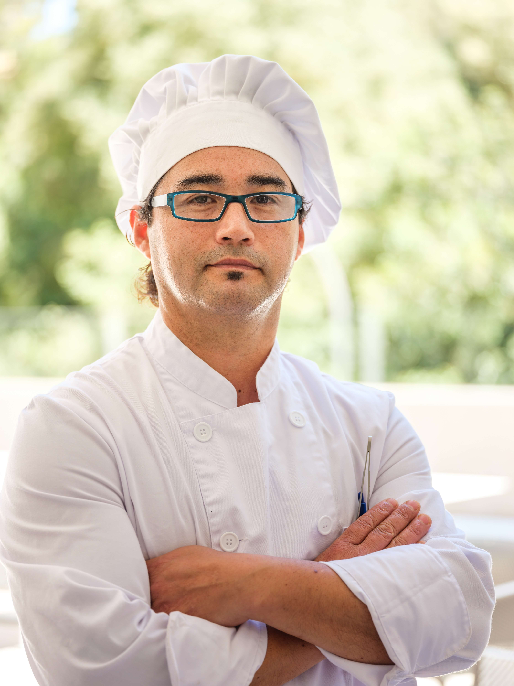

Nuestro Equipo
Jose Luis
Es uno de los cocineros más conocidos de la televisión mundial. Su fama se debe a su participación en programas de desafíos culinarios para principiantes como Kitchen Nightmares, Hells Kitchen, Hotel Hell y MasterChef, donde participa como jurado.
Roberto Garcia
Es uno de las mejores Chefs de Europa y el mundo. Comenzó a cocinar en el restaurante de sus padres, donde aprendió a preparar las bases vascas de sus platillos actuales. Ella es una especialista en la preparación de platos tradicionales vascos, a los cuales aprendió a imprimirle su toque personal y singular.
Rosa Meneses
Se le conoce en el mundo culinario como “La maestra”. Nació en España en 1962 y, en su momento, su desaparecido restaurante Bulli fue considerada el mejor establecimiento de comida del mundo, según la Guía Michellin.
Maria Perez
Este Chef de origen italiano ganó el título al mejor restaurante del mundo en 2018 gracias a la calidad de su establecimiento llamado Osteria Francescana, un premio que otorga The 50 Best. Aprendió de grandes de la cocina mundial, como Ferran Adriá, lo que significó una gran influencia para su trabajo.
Roberto Garcia
Si fue elegido en el año 2019 como el mejor cocinero del mundo por la lista The 50 Best. Este galardonado Chef de 28 años de edad es el más joven en llevarse este galardón en las 4 ediciones que se ha llevado a cabo.
Tito Meneses
Santibáñez, nacido en la Ciudad de México, egresó de las reconocidas escuelas de cocina Le Cordon Blue y Lenôtre en París donde aprendió repostería. Su primer trabajo como cabeza de cocina fue en la Fonda San Miguel ubicada en Austin, Texas, donde obtuvo el galardón como Mejor Chef por el diario The Austin Chronicle y el The Austin American-Statesman.